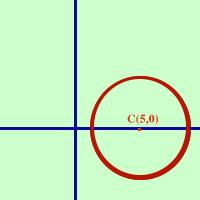

|
In tal caso b = 0 e l'equazione della circonferenza diventa x2+ y2 + ax + c = 0 Poiche' le coordinate del centro sono: xo = -a/2 yo = -b/2 Si avra' yo = 0 Cioe' se manca il termine by la circonferenza ha il centro su un punto dell'asse delle x (equazione y=0) Esempio, considero la circonferenza:  x2+ y2 -10x + 9 = 0 il centro vale xo = -a/2 = 5 yo = -b/2 = 0 ed il raggio vale r = = E' la circonferenza di centro C(5,0) e raggio 4 |